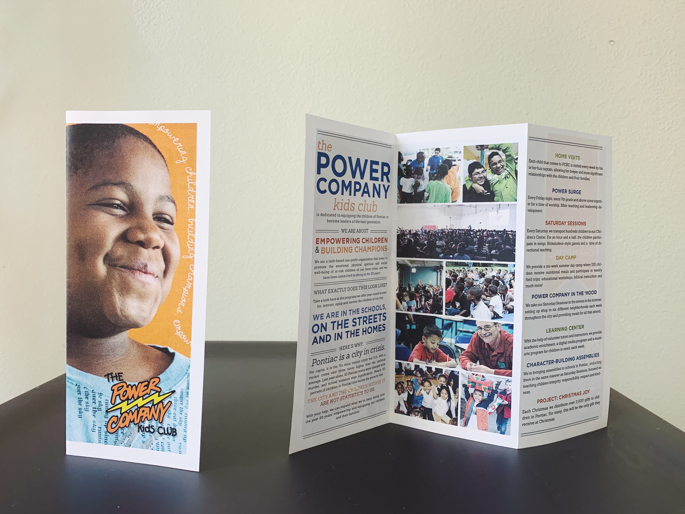

Columbia University | Final Project Visualization | 2022
WDET | Article Thumbnail | 2018
WDET | Reporting Series Thumbnail | 2014

WDET | Voter Guide + Election Results Portal | 2018

WDET | Voter Guide + Election Results Portal | 2018
WDET | Podcast Logo | 2016
Redeemer Detroit | Bulletin Template | 2017
Data Driven Detroit | Website Redesign Wireframes | 2015
Data Driven Detroit | Organization Booklet | 2014
Data Driven Detroit | Organization Booklet | 2014

Power Company Kids Club (PCKC)
Program Brochure* | 2013
Program Brochure* | 2013
PCKC | Newsletter Redesign* | 2013
PCKC | Fundraiser Invitations* | 2013
PCKC | Fundraiser Invitations* | 2013